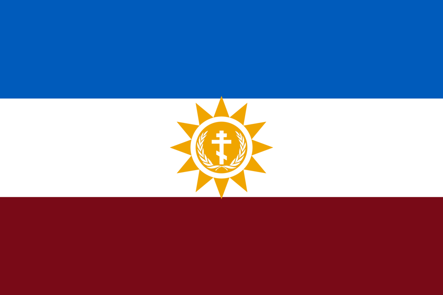
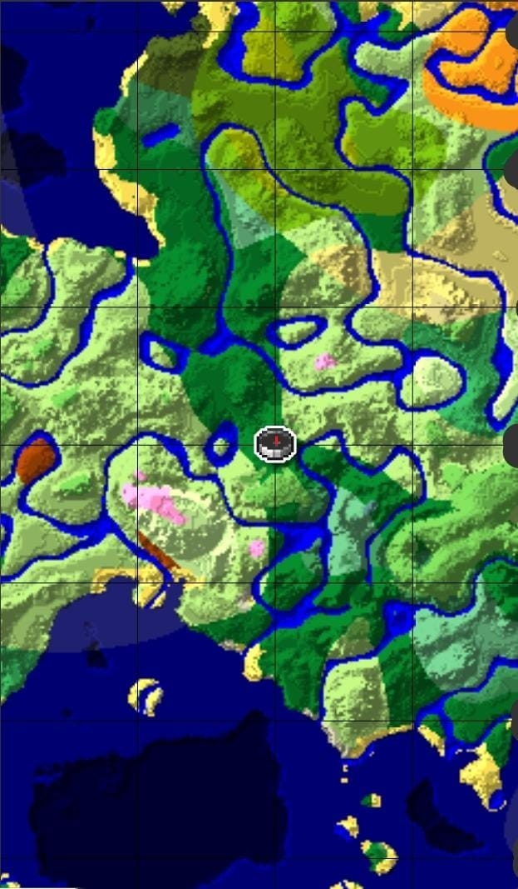

Historia
Krasnovia es una nación de un universo alternativo cuya lengua se habla desde el 760 a.C. Su historia está escrita en su arquitectura: cada época dejó su estilo, y las tres conviven en el mapa.
Zarismo
Monarquía imperial. Estilo victoriano: palacios, catedrales, estaciones de tren y farolas de hierro.
República Socialista
Estado socialista. Estilo soviético: bloques de departamentos, fábricas, monumentos y plazas amplias.
República actual
República de orientación derechista que conserva el valor central de su historia: el pueblo es el pilar de la sociedad. Estilo moderno.
Símbolos nacionales


- Иновация · Innovación
- Единство · Unión
- Храброство · Valentía
Himno nacional
Escrito en krasnoviano, con su traducción al español. Versión provisional.
Estrofa I
Ґурӓ висока, земля наша,
в срце на народ сияе солнце.
Ми идемо към зора ясна,
Ми есмо Красновя!
Montaña alta, tierra nuestra, en el corazón del pueblo brilla el sol. Vamos hacia el alba clara, ¡somos Krasnovia!
Estribillo
Държава служи народ,
народ твори държаву!
Красновя, Красновя, наш дом, наша слава!
¡El estado sirve al pueblo, el pueblo hace al estado! Krasnovia, Krasnovia, nuestro hogar, nuestra gloria.
Estrofa II
Бил цар в палата, била звезда в завод,
но всегда бил народ стълп на земля.
Времена били, бори били,
народ остал!
Hubo un zar en el palacio, hubo una estrella en la fábrica, pero siempre el pueblo fue el pilar de la tierra. Hubo tiempos, hubo luchas, ¡el pueblo permaneció!
Estrofa III
Ми будемо стълп, ми будемо мост,
ми идемо към утро, ми не идемо сами.
Под горой, в град, на повърхност,
ми есмо народ!
Seremos pilar, seremos puente, vamos hacia la mañana, no vamos solos. Bajo la montaña, en la ciudad, en la superficie, ¡somos el pueblo!
Música prevista: compás de 3/4 en tonalidad mayor, como un vals solemne que recuerda la herencia victoriana.
El idioma krasnoviano
El krasnoviano (красновянски) es la lengua oficial, con raíz eslava y rasgos propios del aislamiento alpino. Se escribe en un alfabeto cirílico adaptado de 32 letras, más las vocales alpinas ӓ ӧ ӱ. Su orden básico es sujeto, verbo y objeto, y la negación ne va antes del verbo.
Krasnovia Rewind
El proyecto para reconstruir el país en un servidor de Minecraft, esta vez con mejor organización. Aquí está el mapa de la semilla del mundo.
